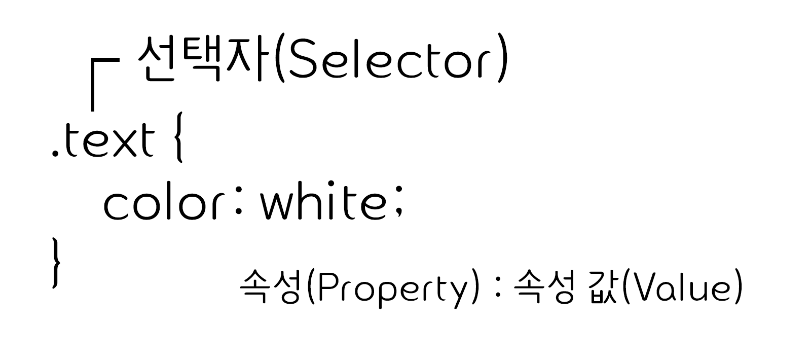
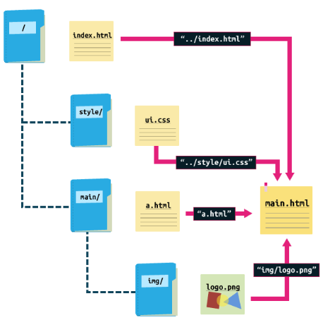
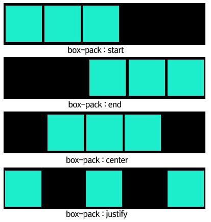
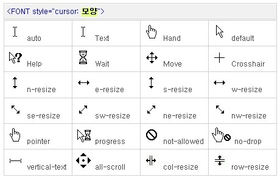

CSS(Cascading Style Sheets)
HTML로 작성된 문서를 쓰기 위한 스타일시트 언어
HTML은 문서의 골격을 이룬다면 CSS는 그 골격에 맞는 디자인 작업 언어라 생각하면 된다.
CSS 선택자
CSS 선택자를 통해 요소를 선택하고 속성을 줄 수 있다.
id선택자와 class 선택자
- id 선택자
- 하나의 태그만 식별하기 위한 선택자
- 하나의 태그에서 하나만 사용 가능 (중복 X)
"#"으로 표시
- class 선택자
- 여러개의 태그를 식별하기 위한 선택자
- 하나의 태그에서 여러개 사용 가능
"."으로 표시
말 그대로 선택을 해주는 요소. 이를 통해 특정 요소들을 선택하여 스타일을 적용할 수 있게 된다.
위에 있는 그림처럼 선택자를 먼저 쓰고 중괄호 { } 안에 속성과 값을 적는 방식으로 이루어져 있다.
선택자는 다음과 같이 3개로 이루어져 있다.
- 태그선택자 : HTML요소를 직접 지칭하는 가장 간단한 선택자 태그에 대한 스타일만 지정이 되어있으므로,태그에는 개발자가 지정해주는 스타일이 적용되지 않는다.
- class속성이 아닌 id속성을 사용하는 것을 제외하곤 클래스 선택자와 매우 유사
- class 선택자 :주어진 값을 class속성값으로 가진 HTML요소를 찾아 선택
3개의 선택자를 조합하는 방식으로 원하는 태그에 원하는 스타일을 적용시킬수 있다.
기본 선택자
| 종류 | 예시 | 이름 |
|---|---|---|
| 태그 선택자 | p {color:#fff;} | p 태그를 선택하여 글씨 색을 하얀색으로 변경합니다. |
| 클래스 선택자 | .class {color:#fff;} | class 클래스를 선택하여 글씨 색을 하얀색으로 변경합니다. |
| 아이디 선택자 | #id {color:#fff;} | id 아이드를 선택하여 글씨 색을 하얀색으로 변경합니다. |
| 그룹 선택자 | p, div {color:#fff;} | p 태그와 div 태그를 선택하여 글씨 색을 하얀색으로 변경합니다. |
| 전체 선택자 | * {color:#fff;} | 전체 태그를 선택하여 글씨 색을 하얀색으로 변경합니다. |
계층 선택자
| 종류 | 예시 | 이름 |
|---|---|---|
| 하위 선택자(Descendant Selector) | div p {color:#fff;} | div 태그의 모든 자식 중 p 태그를 모두 선택하여 글씨 색을 하얀색으로 변경합니다. |
| 자식 선택자(Child Selector) | div > p {color:#fff;} | div 태그의 모든 자식 중 첫번째 자식 p 태그를 선택하여 글씨 색을 하얀색으로 변경합니다. |
| 형제 선택자(sibling Selector) | div ~ p {color:#fff;} | div 태그의 인접한 형제 p 태그를 모두 선택하여 글씨 색을 하얀색으로 변경합니다. |
| 인접 형제 선택자(Adjacent Sibling Selector) | div + p {color:#fff;} | div 태그의 인접한 형제 첫번째 p 태그를 선택하여 글씨 색을 하얀색으로 변경합니다. |
속성 선택자
| 종류 | 예시 | 이름 |
|---|---|---|
| [name] | a[href] | a 태그 속성 중에 href가 있으면 선택합니다. |
| [name="value"] | a[href="#header"] | a 태그 href 속성의 값이 '#header'이면 선택합니다. |
| [name~="value"] | a[href~="web"] | a 태그 href 속성의 값이 'web'을 포함한 요소를 선택합니다. |
| [name|="value"] | a[href|="web"] | a 태그 href 속성의 값이 'web'이거나 'web'으로 시작하는 요소를 선택합니다. |
| [name^="value"] | a[href^="web"] | a 태그 href 속성의 값이 'web'으로 시작하는 태그를 선택합니다. |
| [name*="value"] | a[href*="web"] | a 태그 href 속성의 값이 'web'이 포함되어 있는 태그를 선택합니다. |
| [name$="value"] | a[href$="com"] | a 태그 href 속성의 값이 'com'으로 끝나는 태그를 선택합니다. |
가상 요소
| 종류 | 예시 | 이름 |
|---|---|---|
| ::first-line | p:first-line {color:#fff;} | 문단의 첫 줄에 컬러색을 하얀색으로 변경합니다. |
| ::first-letter | p:first-letter {color:#fff;} | 문단의 첫 글자에 컬러색을 하얀색으로 변경합니다. |
| ::before | p:before {content:"시작"} | 문단 시작 부분에 '시작'이라는 요소를 추가합니다. |
| ::after | p:after {content:"끝"} | 문단 끝 부분에 '끝'이라는 요소를 추가합니다. |
| ::selection | p:selection {color:#fff;} | 드래그로 선택하였을 경우 글씨 색을 하얀색으로 변경합니다. |
가상 클래스
| 종류 | 예시 | 이름 |
|---|---|---|
| :first-child | li:first-line {color:#fff;} | li 자식 요소 중 첫 번째 자식 요소에게 컬러를 하얀색으로 변경합니다. |
| :last-child | li:last-line {color:#fff;} | li 자식 요소 중 마지막 번째 자식 요소에게 컬러를 하얀색으로 변경합니다. |
| :first-of-type | p:first-of-type {color:#fff;} | 자식 요소 중 p 태그 첫 번째 자식 요소에게 컬러를 하얀색으로 변경합니다. |
| :last-of-type | p:last-of-type {color:#fff;} | 자식 요소 중 p 태그 마지막 번째 자식 요소에게 컬러를 하얀색으로 변경합니다. |
| :nth-child() | li:nth-child(2) {color:#fff;} | li 자식 요소 중 2번째 자식 요소에게 컬러를 하얀색으로 변경합니다. |
| :nth-last-child() | li:nth-last-child(2) {color:#fff;} | li 자식 요소 중 뒤에서 2번째 자식 요소에게 컬러를 하얀색으로 변경합니다. |
| :nth-of-type() | p:nth-of-type(2) {color:#fff;} | 자식 요소 중 p 태그 2번째 자식 요소에게 컬러를 하얀색으로 변경합니다. |
| :nth-last-of-type() | p:nth-last-of-type(2) {color:#fff;} | 자식 요소 중 p 태그 뒤에서 2번째 자식 요소에게 컬러를 하얀색으로 변경합니다. |
| :only-child | :only-child {color:#fff;} | 자식 요소 중 유일한 태그 자식 요소에게 컬러를 하얀색으로 변경합니다. |
| :only-of-type | p:only-of-type {color:#fff;} | 자식 요소 중 유일한 p 태그 자식 요소에게 컬러를 하얀색으로 변경합니다. |
| :not() | li:not(:nth-child(2)) {color:#fff;} | li 자식 요소 중 2번째 자식 요소를 제외하고 컬러를 하얀색으로 변경합니다. |
| :root | :root {color:#fff;} | 기본 루트 요소의 컬러를 하얀색으로 변경합니다. |
| :empty | :empty {color:#fff;} | 컨텐츠 요소가 없는 요소의 컬러를 하얀색으로 변경합니다. |
링크 가상 클래스
| 종류 | 예시 | 이름 |
|---|---|---|
| :link | a:link {color:#fff;} | 방문하지 않는 링크의 글씨 색을 하얀색으로 설정합니다. |
| :visited | a:visited {color:#fff;} | 방문한 링크의 글씨 색을 하얀색으로 설정합니다. |
| :hover | a:hover {color:#fff;} | 링크 위에 마우스를 올려 놓았을 경우 글씨 색을 하얀색으로 설정합니다. |
| :active | a:active {color:#fff;} | 링크가 활성화되었을 경우 글씨 색을 하얀색으로 변경합니다. |
폼 관련 선택자
| 종류 | 예시 | 이름 |
|---|---|---|
| :checked | input:checked {color:#fff;} | input 태그가 체크되었을 때 글씨 색을 하얀색으로 변경합니다. |
| :focus | input:link {color:#fff;} | input 태그에 초점이 맞추어졌을 때 글씨 색을 하얀색으로 변경합니다. |
| :enabled | input:enabled {color:#fff;} | input 태그가 사용 가능하면 글씨 색을 하얀색으로 변경합니다. |
| :disabled | input:disabled {color:#fff;} | input 태그가 사용 가능하지 않으면 글씨 색을 하얀색으로 변경합니다. |
CSS 색상
RGB모드
가한 혼합 :색을 섞을수록 점점 밝아진다
모니터 화면용 작업(프레젠테이션, 웹디자인..)에서 기본적으로 사용
빛의 삼원색인 빨(Red),초(Green),파(Blue) 조합하여 색을 만든다
세가지 색상을 모두 최대치로 설정하면 흰색이 나온다
CMYK모드
감산 혼합 : 물감처럼 색을 섞을수록 점점 어두워진다
시안(Cyan), 마젠타(Magenta),노랑(Yellow),검정(Black)의 원색을 조합하여 색상을 만든다
출력용 이미지를 작업할 때 사용
네가지 색상을 모두 최대치로 설정하면 검은색이 나온다
16진수 표기법
웹 문서에서 색상을 표현하는 방법은 16진수로 표현하는 방법
두자리씩 묶어서 #RRGGBB형식으로 표현RR:빨강 GG:초록 BB:파랑의 양을 표현
각 색상이 하나도 섞이지 않았음은 00부터 가득 섞였음은 FF까지 사용
색상이름 표기법
색상 이름을 이용하여 색을 표현
가장 기본적인 16가지를 표함하여 216가지의 색상 이름 표기법이 있다.
RGB와 RGBA 표기법
웹문서에서 색상을 표현하는 RGB(255,255,255)는 십진수를 이용하여 표현
색이 하나도 섞이지 않았을 때에는 0으로 표시하고 가득 섞였을때에는 255로 표현
숫자는 색상의 양을 나타내고 a의 투명도(Alpha)를 나타냄 투명도 0과 1을 표현
HSL와HSLA 표기법
웹문서에서 색상을 표현하는 HSL은 색상(HUE), 채도(saturation),밝기(lightness)을 나타냄
색상은 둥글게 배치한 색상환으로 표시
0도와 360도에서 빨강 120도에는 초록색 240도에는 파란색이 배치 채도가 0%이면 회색톤 100%이면 순색으로 표시
밝기는 0%에서는 가장 어둡고 100%에서는 가장 밝다.
CSS 선언
HTML 문서에 스타일을 선언하는 3가지 방법이 있다
- 내부스타일(Internal Style Sheet) : head 태그 안에 선언하는 방법
- 외부 스타일(External Style Sheet) : 외부 파일로 연결하는 방법
- 인라인 스타일(Inline Style Sheet) 태그에 직접 연결하는 방법
<!DOCTYPE html>
<html lang="en">
<head>
<meta charset="UTF-8">
<title>Document</title>
<!-- 내부 스타일 -->
<style>
h1 {color: #fff;}
</style>
<!-- 외부 스타일 -->
<link rel="stylesheet" href="경로">
</head>
<body>
<!-- 인라인 스타일 -->
<h1 style="color: #fff"></h1>
</body>
</html>
float으로 인한 깨짐 현상
float 쓸 경우 영역의 높이 값이 0으로 줄어들기 때문에 영역을 유지하는 방법이 필요
- 꺠지는 영역에 똑같이
float:lefr를 사용 (*모든 영역의 float을 사용 하게 됨 레이아웃이 복잡하면 정확히 어디가 깨지는지 알수 없음) - float의 성질을 차단 하는
clear:both를 사용(*레이아아웃이 복잡하면 어디가 깨지는지 알 수 없음) float을 사용한 부모 막스 영역에overflow
상대 주소/절대 주소
차이점 알아보기
상대주소(상대 경로)
- 해당 파일을 기준으로 주소를 찾는 방식
- link 요소에서 href 속성
절대주소(절대 경로)
- 'http://' 또는'https://' 로 부터 시작해서 전체의 주소를 작성하는 방식
- 어떠한 웹 페이지나 파일이 가지고 있는 고유한 경로
- 웹페이지에서 이미지의 URL을 가지고 오거나 내 컴퓨터 안의 이미지 경로를 가져올때 사용
이미지 표현방법
웹 문서에 이미지를 표현하는 방법은 img 태그와 background를 통해 설정
- img 태그로 표현 방법 : 이미지에 의미가 있는 경우 (로고, 배너)
- background로 표현하는 방법 : 이미지에 의미가 없는 경우 ( 배경, 장식)
img 태그로 이미지 표현하기( 대체 문자 표현O) 시간이 많이 걸림


background 속성으로 이미지 표현하기( 대체 문자 표현X)
이미지 스프라이트를 이용한 이미지 표현 ( 대체 문자 표현 X) 많이 사용
이미지 스프라이트
아이콘 또는 장식을 위한 이미지 요소들은 스프라이트 기법을 활용하여 파일의 사이즈를 최소화하고 효율성을 높임
- 여러번의 서버요청을 한번으로 줄임
- 이미지 수정이나 관리가 간편
- 웹 접근성을 준수하기 위해서는 IR 효과를 설정해야 함
IR 효과
IR(Iamge Replacement)기법은 이미지 대체텍스트를 제공하기 위한 CSS 기법으로 다양한 기법을 사용하여 이미지 대체 텍스트를 제공
Phark Method
의미 있는 이미지의 대체 텍스트를 제공하는 경우 : 이미지로 대체할 엘리먼트에 배경이미지를 설정하고 글자는
PWA IR
의미 있는 이미지의 대처 텍스트로 이미지를 off시에도 대체 텍스트를 보여주고자 하는 경우 : 이미지로 대체할 엘리먼트에 배경이미지를 설정하고 글자를 span태그로 감싼 후
Screen Out
대체 텍스트가 아닌 접근성을 위한 숨김 텍스트를 제공할때 사용
이미지 타입
프로젝트 종류에 따라 여러가지 이미지 타입을 사용할수 있다.
| 종류 | PC Web | Moblie Web | Moblie App | 투명효과 | 용량 | 애니메이션 |
|---|---|---|---|---|---|---|
| GIF | O | O | X | △ | 저 | O |
| JPG | O | O | X | X | 중 | X |
| PNG-8 | X | O | △ | △ | 저 | X |
| PNG-24 | △ | O | O | O | 고 | X |
| SVG | O | O | O | O | 저 | O |
- GIF : 이미지를 저장해도 데이터가 손실 되지 않는 무손실 압축을 사용합니다. 파일 사이즈는 BMP보다 적은데, 좋은 압축 알고리즘을 사용하기 때문입니다. 하지만 Indexed color 속성을 가지고 있어서 최대 256가지의 컬러로만 저장 할 수 있습니다.
- JPG : 인간의 눈으로 확인 할 수 없는 정보를 제거하는 방법으로 디테일한 사진 이미지를 가능한한 작게 만들도록 디자인 되었습니다. 그라데이션이 표현된 이미지가 있다고 가정하면 GIF 타입 보다 JPEG 타입으로 된 이미지가 더 적은 파일 사이즈와 좋은 퀄리티를 가지고 있습니다. 사진이나 그라데이션이 표현된 이미지에 적합하다. 색이 많이 들어가거나 화려한 이미지는 JPG로 표현한다.
- PNG -8 :
- PNG -24: JPEG처럼 수천가지의 컬러를 가지면서 무손실 압축인 훌륭한 포맷이다.
- SVG :
컨텐츠 요소를 보이지 않게 하는 방법
컨텐츠 요소를 보이지 않게 하는 방법은
display,opacity,visibility등이 있다.
| 종류 | 반대 | 영역 | 애니메이션 |
|---|---|---|---|
display:none |
display: block |
영역이 사람짐 | X |
visibility:hiddean |
visibility:visible |
영역유지 | X |
opacity:0 |
opacity:1 |
영역유지 | O |
컨텐츠 요소 가운데 정렬하는 방법
반응형 사이트를 만들 떄 제일 많이 쓰이는 기법( 방법은 여러가지)
- 가장 기본적인 방법 but ! 한 줄 (요소)일 경우에서만 해당
- 부모 요소(인라인구조): text-align : center; line-height: (height값과 동일하게)
- 요소 (블록구조): margin:0 auto; width값 설정, line-height: (height값과 동일하게)
- 요소의 성질을 table 로 변환시켜 가운데 정렬 하는 방법(많이 사용하지 않기 때문에 잘 쓰지 않는 방법)
- 부모요소 : display:table;
- 자식요소 : display:table-cell, text-align:center; vertical-align:middle;
- 절대요소를 이용한 방법( 흔한 방법 but! 영역이 없어지는 것이 단점 반응형을 할때 사용하지 불편)
- 부모요소 : position:relative;
- 자식요소 : position:absolute; top:50%; left: 50%; margin-top:-(자식 요소 높이값의 반); margin-left:-(자식 요소 가로값의 반);
- 자식요소의 가로값과 세로값을 모르고 유동적인 경우에 절대 요소를 사용하는 방법
- 부모요소 : position:relative;
- 자식요소 : position:absolute; top:50%; left: 50%; transform:translate(-50%, -50%);
- 절대요소를 이용한 방법( 흔히 쓰이지는 않음)
- 부모요소 : position:relative;
- 자식요소 : position:absolute; top:0; left:0; top:0; right:0; margin: auto;
- css3를 이용한 방법 ( 최신 브라우저 이외에서는 작동하지 앟는 단점 but 표준화가 된다면 앞으로 많이 쓰일 방법)
- 부모요소 : height 값 설정
- 자식요소 : display: flex; justify-content: center; align-items: center;
미디어 쿼리
화면(screen), 티비(tv), 프린터(print)와 같은 미디어 타입(media type)과 적어도 하나 이상의 표현식(expression)으로 구성
- 표현식은 width, height, color와 같은 미디어 특성(media feature)들을 이용하여 그 특성들의 상태에 따라 다른 스타일 시트를 적용
- CSS3에 포함
- 텐츠의 변경없이 주로 화면의 크기에 따라 스타일 시트를 달리하여 적절한 모양을 보여줄도 있다.
두 가지 방법으로 사용된다.
- < link> : 사용하여 특성이 조건에 맞을때 css 파일을 불러옵니다. media속성의 "screen and (max-width: 768px)"의 의미는 미디어 타입이 스크린이고, 화면의 최대 너비가 768px로 지정 , 그러므로 화면의 너비 768px 이하 일때가 적용이 된다.
- @media : 위와 동일한 조건이고, 그 조건이 맞으면 {...} 안의 스타일이 적용
Margin
요소의 바깥쪽 여백을 설정
Margin -top: 10px;요소의 위쪽 바깥 여백을 설정Margin -right: 11px;요소의 오른쪽 바깥 여백을 설정Margin -bottom: 12px;요소의 아래쪽 바깥 여백을 설정Margin -left: 13px;요소의 왼쪽 바깥 여백을 설정Margin : 10px 11px 12px 13px;요소의 위/오른/아래/왼쪽 바깥 여백을 설정Margin : 10px 11px 12px;요소의 위(10px)/ 오른,왼(11px)/아래(12px)Margin : 10px 11px;요소의 위,아래(10px)/오른, 온(11px)Margin : 10px;요소의 위/오른/아래/왼 (10px)Margin: auto;자동값 또는 기본값 또는 초기값Margin: 0 auto;블록 구조를 가운데 정렬할 때 사용
Padding
요소의 안 쪽 여백을 설정
Padding -top: 10px;요소의 위 안쪽 여백을 설정Padding -right: 11px;요소의 오른 안쪽 여백을 설정Padding -bottom: 12px;요소의 아래 안쪽 여백을 설정Padding -left: 13px;요소의 왼 안쪽 여백을 설정Padding : 10px 11px 12px 13px;요소의 위/오른/아래/왼쪽 안쪽 여백을 설정Padding : 10px 11px 12px;요소의 위(10px)/ 오른,왼(11px)/아래(12px)Padding : 10px 11px;요소의 위,아래(10px)/오른, 온(11px)Padding : 10px;요소의 위/오른/아래/왼 (10px)
Width
요소의 가로 값을 설정
Width: 10pxWidth: auto자동값 또는 초기값
Height
요소의 세로 값을 설정
Height: 10pxHeight: auto자동값 또는 초기값
Text-align
텍스트의 정렬방식을 설정
Text-align : left왼쪽 정렬Text-align: right오른쪽 정렬Text-align: center가운데 정렬Text-align: justify양쪽 정렬
font
폰트의 다양한 속성을 설정
- font : 글자를 꾸미는 가장 기본이 되는 태그
- font-family : 여러 개의 글꼴을 모아 놓은 태그
font-family: '글꼴이름';font-family: inherit;: 부모 요소로부터 값을 상속
- font-size : 글자 크기 지정
font-size: medium;: 웹브라우저에서 정한 기본 글자크기font-size :xx-small | x-small | small | large | x-large | xx-large;: medium에 대한 상대적인 크기font-size :smaller | larger;: 부모 요소의 글자 크기에 대한 상대적인 글자 크기font-size : length ;: px, %, em, rem 등으로 크기 설정font-size : initial;: 기본값font-size : inherit;: 부모 요소의 속성값을 상속
- font-size-adjust : 소문자와 대문자 사이의 비율을 유지
ont-size 속성 값을 조정하여 x-height 속성 값이 글꼴에 관계없이 고정되게 함으로써 가독성을 유지
font-size-adjust : nubmer;: 사용할 비율을 지정font-size-adjust : none;기본값 (글꼴 크기 변경Xfont-size-adjust : inherit;부모 요소의 속성값을 상속
- font-stretch : 글자의 폭을 넓게 늘이거나 좁게 축소하는 태그
font-stretch : ultra-condensedfont-stretch : extra-condensedfont-stretch : condensedfont-stretch : semi-condensedfont-stretch : normalfont-stretch : semi-expandedfont-stretch : extra-expandedfont-stretch : ultra-expandedfont-stretch :inherit
- font-style : 글자 모양을 정하는 속성(기울임 여부설정)
font-style:normal: 브라우저가 보여주는 기본(default) 스타일font-style:italic기울임font-style: oblique보통 모양 그대로 기울임( italic 글꼴과 비슷)font-style:initial기본값font-style:inherit부모 요소의 속성값을 상속
- font-variant :
- font-face :
line-height
줄 간격을 지정하는 속성
line-height: normal: 웹브라우저에서 정한 기본값(보통 1.2)line-height: length: 길이로 줄 높이 정함line-height: number: 글자 크기의 몇 배인지로 줄 높이를 정함line-height: percentage: 글자 크기의 몇 %로 줄 높이로 정함line-height: initial: 기본값으로 설정line-height: inherit: 부모 요소의 속성값을 상속
float
공간은 차치하되 다른 요소의 배치에 영향을 받지 않는 요소
float:none: 기본 값float:left: 왼쪽으로 띄움float:right: 오른쪽으로 띄움float:initial: 기본값으로 설정float:inherit: 부모요소로부터 상속
text-transform
대문자/소문자 바꾸는 속성(한글에는 의미 없음)
text-transform : none: 입력된 그대로 출력text-transform : capitalize: 단어의 첫번째 글자를 대문자 변경text-transform : uppercase: 모든 글자를 대문자 변경text-transform : lowercase: 모든 글자를 소문자변경text-transform : initial: 기본값으로 설정text-transform :inherit: 부모 요소의 속성값을 상속
text-decoration
텍스트를 꾸밀 수 있게 해주는 속성
text-decoration : none: 선을 만들지 않음text-decoration : line-through: 글자 중간에 선을 만듬text-decoration : overline: 글자 위에 선을 만듬text-decoration : underline: 글자 아래선을 만듬text-decoration : initial: 기본값으로 설정text-decoration :inherit: 부모 요소의 속성값을 상속
background
백그라운드 이미지 속성 값을 설정
background속성값을 차례로 설정 (속기법)- background-attachment : 이미지 고정여부를 설정
background-attachment : scrollbackground-attachment : fixedbackground-attachment : local
- background-blend-mode : 배경을 혼합했을때의 상태를 설정
background-blend-mode : nomalbackground-blend-mode : multiplybackground-blend-mode :screenbackground-blend-mode : overlaybackground-blend-mode : daykenbackground-blend-mode : lightenbackground-blend-mode : color-dodgebackground-blend-mode : saturationbackground-blend-mode :colorbackground-blend-mode :luminosity
- background-clip : 이미지영역여부 설정
background-clip : border-boxbackground-clip : padding -boxbackground-clip : content -box
- background-color : 컬러 설정
background-color : colorbackground-color : transparent
- background-image : 이미지 설정
background-image : url ()background-image : none
- background-orgin : 방향 설정
background-orgin : border-boxbackground-orgin : padding -boxbackground-orgin : content -box
- background-postion : 위치 설정
background-postion : left | right | bottom | topbackground-postion : percentagebackground-postion : length
- background-repeat : 반복 여부 설정
background-repeat: repeat;기본값( X축 Y축 반복)background-repeat: repeat-x;이미지가 X축으로 반복background-repeat :repeat-y;이미지가 Y축으로 반복background-repeat :no-repeat;이미지를 하나만 나오게 설정
- background-size : 사이즈 설정
background-size: auto;background-size: contain;background-size :cover;background-size :percentage;background-size :length;
border
테두리 설정
- border
- border-color
border-right-colorborder-top-colorborder-left-colorborder-bottom-color
- border- width
border-right-widthborder-top-widthborder-left-widthborder-bottom-width
- border- style
border-right-styleborder-top-styleborder-left-styleborder-bottom-style
- border - image
border-image-outsetborder-image-repeatborder-image-sliceborder-image-sourceborder-image-width
- border- radius
border-top-lert-radiusborder-top-right-radiusborder-bottom-lert-radiusborder-bottom-right-radius
position
태그를 어떻게 위치시킬지를 정의하며, 아래의 5가지 값을 갖는다.
position:static: 기본값, 다른 태그와의 관계에 의해 자동으로 배치되며 위치를 임의로 설정Xposition:absolute: 절대 좌표와 함께 위치를 지정position:relative: 원래 있던 위치를 기준으로 좌표를 지정position:fixed: 스크롤과 상관없이 항상 문서 최 좌측상단을 기준으로 좌표를 고정position:sticky: 웹페이지 스크롤 시, sicky가 적용된 엘리트먼트의 부모 요소의 height 범위 내에서는 fixed(고정)으로 작동 그 외의 경우 static으로 동작하게 하는 속성
좌표를 지정 해주기 위해서는 left, right, top, bottom 속성과 함께 사용
display
요소를 어떻게 보여줄지를 결정(상속X)
속성값
display:none: 선택한 요소가 나타나지 Xdisplay:block: div 처럼 블록 지정으로 자동 줄 바꿈과 지정 할수 있도록 함display:inline: 기본값 요소를 inline 요소처럼 표시, 앞뒤로 줄바꿈 Xdisplay:inline-block: inline인데 내부는 block 처럼 표시함, 박스 모양이 inline 처럼 옆으로 늘어남
display: -webkit-box; -webkit-box-orient: vertical; -webkit-line-clamp: 3;
wedkit 란?
크롬 전용 css (css가 ie에서 적용 되고 크롬에서 적용이 안되는 경우 크롬에만 따로 클래스를 주는 방법)
wedkit기반의 브라우저인 크롬과 사파이등에서 지원
display:box
- 블록에 float 대신 사용
- 블록을 수직, 수평으로 배치하거나 역순으로 배열하거나 임의로 배치 순서 변경 가능
각 브라우저 별로 태그 지정하는 방법
- Internet Explorer 10 :
display:-ms-flexbox; - Firefox :
display:-moz-box; - Safari, Chrome, and Opera 등 :
display:-webkit-box; - W3C :
display:box;
속성
box-orient: 박스의 흐름의 방향을 지정box-orient : vertical: 박스를 수직방향으로 배치하고 box-orient : horizontal 은 박스를 수평방향으로 배치
(아무런 속성을 입력하지 않는다면 box-orient : horizontal이 기본 적용)box-orient : inherit: body가 갖는 기본 속성을 상속
box-pack: 박스가 정렬되는 방향을 지정box-pack : start: 기본 정렬방법인 좌측/상단부터 정렬box-pack : end: 반대방향인 우측/하단부터 정렬box-pack : center: 가운데로 정렬

- box-direction : 박스가 정렬되는 순서를 지정
box-pack : nomal:기본 값
HTML문서에 작성된 순서대로 배치box-pack : reverse: HTML문서에 작성된 반대순으로 배치
box-ordinal-group: 박스가 배치된 순서를 변경box-flex: 박스 크기에 대한 비율을 지정
박스들을 감싸고 있는 부모블럭이 아닌 각 자식블럭에게 직접 순서를 지정box-flex : 0: 기본값box-flex : 1: 지정한 블럭은 감싸고 있는 부모블럭의 남은 공간을 채우게 된다.
z-index
요소의 수직 위치 정하는 속성
position 속성을 이용하면 요소를 겹치게 놓을수 있음. 이때 요소들의 수직 위치를 z-index 속성으로 정함. 숫자가 클 수록 위로 올라오고, 숫자가 작을 수록 아래로 내려감.
z-index: auto: 기본값 지정하지 않은 것과 같음z-index: number: 배치 순서를 결정, 숫자가 낮을 수록 뒤에 배치 되며 숫자가 높을수록 앞에 나옴 (-1 처럼 음수도 가능)z-index: initial: 기본값으로 설정
text-index
문단의 첫줄 들여쓰기 할때 쓰는 속성 (음수값 사용 가능)
속성값
text-index : 길이값: px, em, cm 등의 단위로 지정 (기본값 0)text-index : %: 부모 요소 너비에 상대적인 백분율
vertical-align
inline 또는 table-cell box에서의 수직 정렬을 지정
속성값
vertical-align: baseline: 기본값으로 부모 요소의 기준선(baseline) 에 맞춤vertical-align: sub: 아래 첨자에 기준을 맞춰서 정렬vertical-align: super: 부모의 위첨자 기준선에 맞춰서 정렬vertical-align: text-top: 요소의 맨 위를 부모 font 의 맨 위에 맞춤vertical-align: text-bottom: 요소의 맨 아래를 부모 font 의 맨 위에 맞춤vertical-align: middle: 부모 요소 중앙에 위치vertical-align: top: 요소의 맨 위를 줄에서 가장 큰 요소의 맨 위에 맞춤vertical-align: bottom: 요소의 맨 아래를 줄에서 가장 큰 요소의 맨 위에 맞춤vertical-align: 길이값(px, cm 등): 0px는 baseline과 같은 값vertical-align: % (백분율): line-height(줄간격)의 백분율, 0% baseline과 같은 값
overflow
요소의 콘텐츠가 너무 커서 요소의 블록 서식 맥락에 맞출 수 없을 때의 처리법을 지정
overflow: visible: 기본 값 넘칠 경우 컨텐츠가 상자 밖으로 보임overflow: hidden: 넘치는 부분은 잘려서 보여지지 않음overflow: scroll: 스크롤바가 추가되어 스크롤할 수 있음.(가로, 세로 모두 추가 됨)overflow:auto: 컨텐츠 량에 따라 스크롤바를 추가할지 자동으로 결정 (필요에 따라 가로, 세로 별도로 추가될 수도 있음)overflow-x/overflow-y: 가로, 세로 overflow 를 각각 제어하고자 할때 사용
text-overflow
긴 글을 한 줄로 나타내고 영역이 벗어나는 경우 생략기호로 바꾸는때 사용
display 속성이 블럭 형태인 경우에만 적용
block 또는 inline-block과 같이 설정해야만 정상적으로 작동
속성값
text-overflow: ellipsis
white-space
내부에서의 자동 줄 바꿈 여부를 나타내는 값을 설정
white-space:normal: 기본값 글자 줄이 자동으로 바뀜 콘텐츠가 요소의 너비를 초과할 경우 다음 줄로 바뀜white-space:nowrap: 줄 바꿈이 실행되지 않음. 콘텐츠가 다음 줄로 바뀌지 Xwhite-space:pre: 줄바꿈 X. 공백 한 칸 이상을 인식white-space:pre-line:줄바꿈 O. 공백 한 칸 이상을 인식Xwhite-space:pre-wrap: 줄바꿈 O. 공백 한 칸 이상을 인식white-space:inherit: white-space의 속성 값을 상위요소한테 상속
box-sizing
박스의 크기를 어떤 것을 기준으로 계산할지를 정하는 속성
border-box : 테두리를 기준으로 크기를 정함
- width 와 height 속성이 안쪽 여백과 테두리는 포함( 바깥 여백은 포함 X )
- 안쪽 여백과 테두리가 요소 상자 안에 위치함을 유의해야함
- box {width: 350px; border: 10px solid black;}을 적용한 요소의 너비는 350px이다.
- 콘텐츠 영역의 크기는 음수일 수 없으므로 border-box를 사용해 요소를 사라지게 할 수는 없음.
content-box : 텐트 영역을 기준으로 크기를 정함
- CSS 표준이 정의한 초기 기본값
- width와 height 속성이 콘텐츠 영역만 포함하고 안팎 여백과 테두리는 포함하지 않음
- 즉 box {width: 350px; border: 10px solid black;}을 적용한 요소의 너비는 370px이다.
- 요소의 크기는 너비 = 콘텐츠 너비, 높이 = 콘텐츠 높이로 계산하고 테두리와 안쪽 여백은 식에 넣지 않는다.
initial : 기본값으로 설정
inherit : 부모 요소의 속성값을 상속
cursor
속성을 이용하여 해단 태그 위에 위치하는 마우스 커서의 모양을 변경
Auto
Crosshair
Default
Pointer
Move
e-resize
ne-resize
nw-resize
n-resize
se-resize
sw-resize
s-resize
w-resize
Text
Wait
Help
사용 방법
<a href="링크주소" style="cursor: 원하는 모양 태그;"></a>참고 사이트여기여기!!!